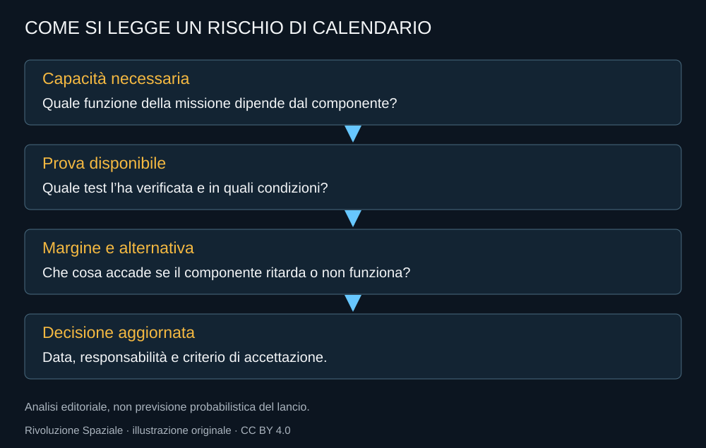

Artemis ha già risultati importanti e conserva una grande parte di futuro. Il bilancio al 10 ottobre 2026 deve contenere entrambi. SLS e Orion hanno eseguito una missione senza equipaggio e una missione umana lunare; i sistemi di allunaggio, le tute e la logistica devono convergere verso il passo successivo.
Il costo non è un solo numero
Il contratto di sviluppo di un lander non è il prezzo di un allunaggio. Il costo di un programma comprende anni di ricerca, impianti, personale e hardware. Il costo marginale di una missione e quello complessivo dell’investimento rispondono a domande diverse.
Confrontare cifre senza il loro perimetro rende facile costruire un grafico sbagliato. In questo libro non vengono sommati contratti storici di contenuto diverso per ricavarne un prezzo per astronauta, né viene confrontato un servizio futuro promesso con una spesa pubblica già sostenuta.
I controlli indipendenti hanno un ruolo
NASA OIG valuta contratti, calendario e rischi. Il rapporto HLS del 2026 riconosce aspetti di controllo dei costi nell’approccio contrattuale e segnala l’incertezza delle proposte di accelerazione. La revisione della campagna è riportata in un addendum: anche la valutazione deve seguire l’architettura aggiornata.
Una critica tecnica non è una profezia di fallimento e una promessa del programma non è una prova di successo. Il valore del controllo sta nel rendere esplicite dipendenze e ipotesi, così che le decisioni possano essere confrontate con i risultati.

La cronologia da consultare
Le righe distinguono risultati, decisioni e obiettivi. Una data futura non entra nel conteggio delle missioni concluse.
10 eventi visualizzati
| Data | Evento | Stato |
|---|---|---|
| Settembre 2020 | Piano Artemis con allunaggio-obiettivo nel 2024 | Piano storico, scadenza non realizzata |
| Aprile 2021 | Selezione SpaceX HLS | Contratto di sviluppo |
| 16 novembre 2022 | Lancio Artemis I | Risultato |
| 11 dicembre 2022 | Ritorno Artemis I | Risultato |
| Maggio 2023 | Selezione Blue Origin HLS | Contratto di sviluppo |
| Febbraio 2026 | Artemis III diventa prova in orbita terrestre | Revisione del programma |
| 24 marzo 2026 | Priorità alla base lunare; Gateway in pausa nella forma attuale | Decisione annunciata, opere da sviluppare |
| 1–10 aprile 2026 | Artemis II: viaggio umano attorno alla Luna e ritorno | Risultato |
| 2027 | Artemis III, prova integrata in orbita terrestre | Obiettivo futuro |
| 2028 | Artemis IV, missione di allunaggio | Obiettivo futuro |
Le prove da seguire
La maturazione dei lander e la qualificazione delle tute saranno centrali. Il rifornimento dovrà essere valutato come operazione completa e come campagna. L’incontro fra veicoli dovrà ritirare rischi, non soltanto produrre un’immagine di due oggetti vicini.
Per la base, conteranno energia, consegne e vita utile degli apparati. La parola permanente non può essere dimostrata con una missione breve. Una presenza richiede risorse che permettano di continuare quando un elemento si guasta o un lancio ritarda.
Il criterio del libro
Le prossime edizioni conserveranno la memoria delle decisioni. Un piano superato non viene cancellato dalla storia; un successo futuro non viene anticipato dentro una frase al presente. Le fotografie devono mantenere data e contesto, gli schemi devono descrivere ciò che rappresentano.
Artemis ha restituito il viaggio umano verso la Luna. La parte più ambiziosa resta costruire una continuità. Il programma merita attenzione proprio perché prova a trasformare una destinazione lontana in un luogo di lavoro, scienza e presenza, senza che il ritorno delle persone smetta mai di essere il primo requisito.
Fonti pubbliche e tracce
- NASA OIG, gestione dei contratti HLS, marzo 2026. Rapporto sui contratti e addendum sul piano del febbraio 2026.
- NASA OIG, ritardi delle tute, aprile 2026. Valutazione indipendente NASA OIG su calendario e rischi.
- NASA, nuova architettura Artemis, febbraio 2026. Artemis III in orbita terrestre nel 2027; obiettivo Artemis IV nel 2028.
- NASA, iniziative nazionali e nuova base lunare, 24 marzo 2026. Gateway messo in pausa nella forma attuale; fasi della base lunare e obiettivi di frequenza.
- NASA, Artemis Plan, settembre 2020. Piano storico: obiettivo 2024, non calendario attuale.
- NASA, selezione SpaceX HLS, 16 aprile 2021. Contratto iniziale e requisiti; architettura storica da non confondere con calendario 2026.
- NASA, selezione Blue Origin, 19 maggio 2023. Contratto iniziale Blue Moon; date-obiettivo dell’annuncio storico.
- NASA, equipaggio di nuovo a Houston, 11 aprile 2026. Ritorno dell’equipaggio e distanze del sorvolo.